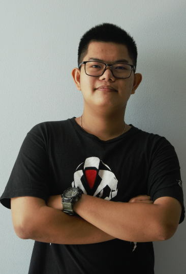
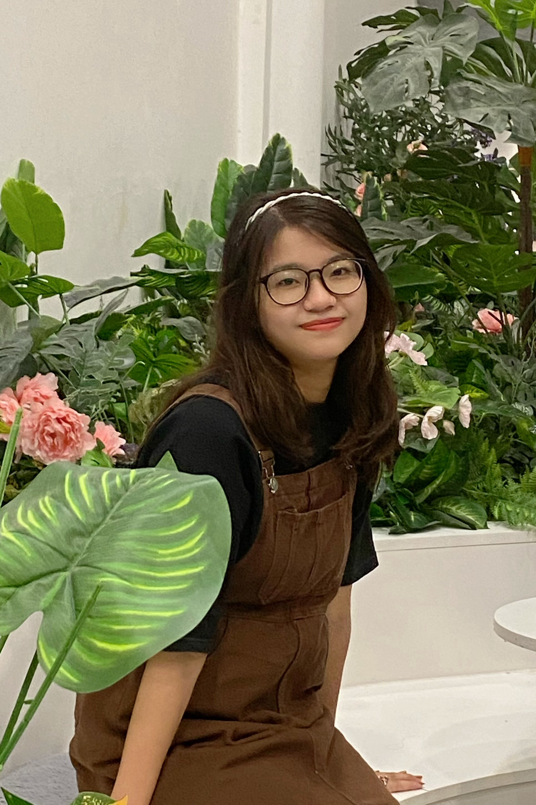
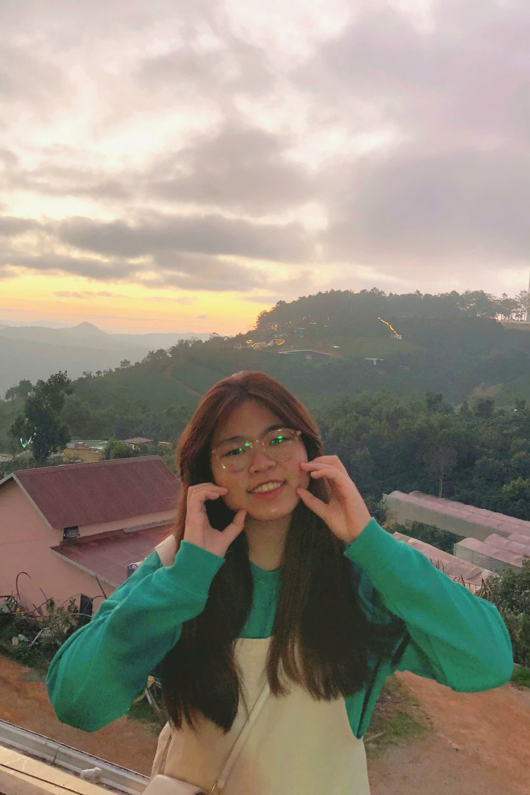
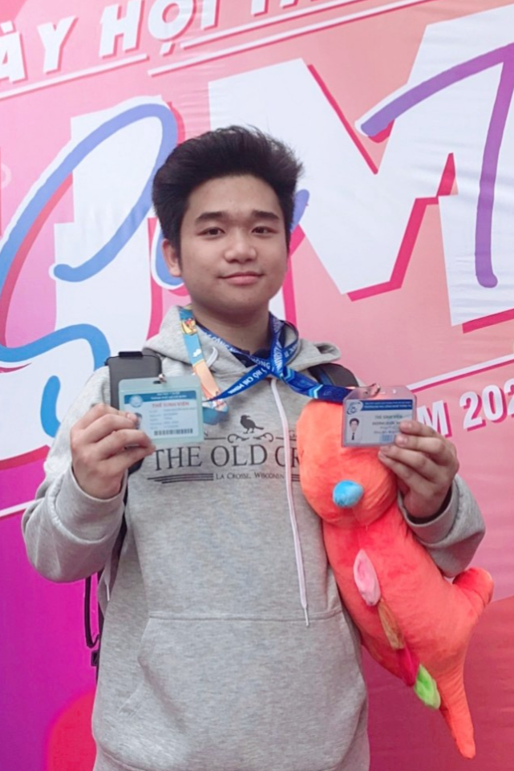
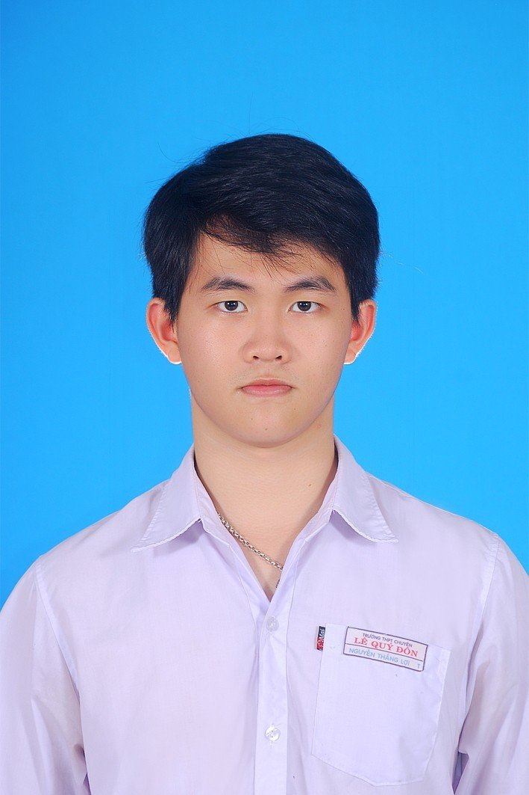
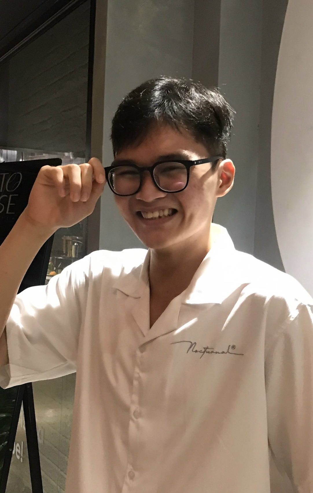

Le Hong Phong
Statistical Learning
Ho Ngoc Luat
Statistical Learning
Dang Hoai Nam
Generative AI

Mai Anh Khoa
Large Language Model
Duong Quoc Nhut
Large Language Model
| Home | Research Group | Teaching | Presentations |
|

Le Xuan Tung Explainable AI |
Bui Dang Phuc Explainable AI |
|
Phan Huynh Ngoc Tram Generative AI |
Pham Thach Thanh Truc Generative AI |
Huynh Tong Dang Khoa Generative AI |
Nguyen Vu Khai Tam Statistical Learning |

Cao Huyen My Statistical Learning |
|

Phuong Hoang Yen Statistical Learning |
|
Le Hong Phong Statistical Learning |
Ho Ngoc Luat Statistical Learning |
Dang Hoai Nam Generative AI |
Mai Anh Khoa Large Language Model |

Duong Quoc Nhut Large Language Model |
|

Nguyen Thang Loi Statistical Learning |
Duong Tan Loc Statistical Learning |
Nguyen Thi Minh Phu Statistical Learning |

Truong Thien Phu Statistical Learning |
|
Nguyen Dang Khoa Statistical Learning |
Tran Minh Thien Statistical Learning |

Phan Vu Quoc Thang Statistical Learning |
Nguyen Quoc Viet Statistical Learning |